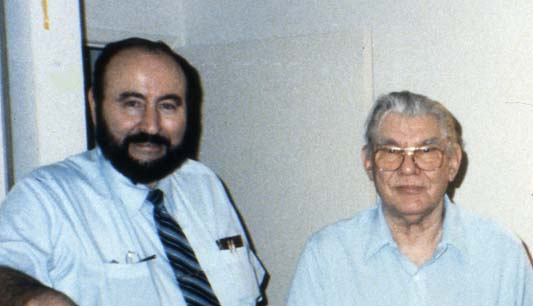
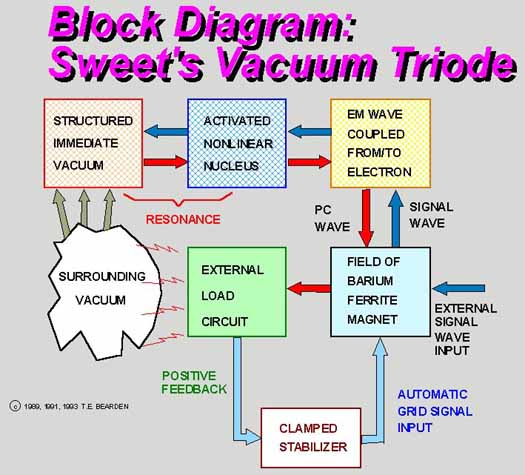

Tom Bearden and Floyd Sweet at Floyd Sweet's home
|
Sweet's solid state vacuum triode used specially conditioned barium ferrite magnetics whose H-field was in self-oscillation. The device produced a COP = 1.2´ 106, outputting some 500 watts for an input of only 33 milliwatts. Sweet never revealed his complete ELF self-oscillation conditioning procedure for the magnets. However, in ferromagnets, self-oscillations of (i) magnetization, are known at frequencies from about 1 kHz to 1 MHz.
 For an entry into this technical area with detailed reference citations, see A.G. Gurevich and G.A. Melkov, Magnetization Oscillations and Waves, CRC Press, 1996, p. 279. See particularly Victor S. L'vov, Wave Turbulence Under Parametric Excitation: Applications to Magnets, Springer-Verlag, Berlin, 1994, p. 214-218, 226-234, 281-289.
Test Engineer Walter Rosenthal explains how
Floyd Sweet's special magnets worked
The late Floyd Sweet demonstrating how he
conditioned his magnets for the VTA Order the DVD - "Floyd Sweet's Secrets"
Floyd Sweet demonstrating with two magnets how he checks their properties on a specially modified TV
John Bedini, Tom Bearden, Floyd Sweet
Floyd Sweet and T. E. Bearden, "Utilizing Scalar Electromagnetics to Tap Vacuum Energy," Proceedings of the 26th Intersociety Energy Conversion Engineering Conference (IECEC '91), Boston, Massachusetts, 1991, p. 370-375. It may be of interest that Kron was a mentor of Sweet, who was his protégé. Sweet worked for the same company, but not on the Network Analyzer project. However, he almost certainly knew the secret of Kron's "open path" discovery and his negative resistor. Excerpted from "On Extracting Electromagnetic Energy from the Vacuum," IC-2000, by Tom Bearden. |